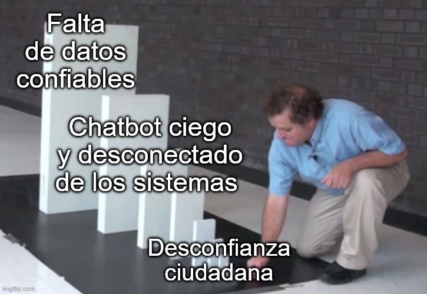

estrategIA #104 ·
El dominó de la confianza
El contexto
Si la administración parte de datos incorrectos, su asistente de conversación puede dar malas respuestas y hacer que la ciudadanía desconfíe del servicio. Las fichas de dominó muestran esa cadena. El artículo insistía en ordenar los datos y conectar los sistemas antes de incorporar IA.
Publicado en: estrategIA #104 — La IA no es un atajo: ¿qué debe cambiar primero en los gobiernos y administraciones públicas para que la automatización funcione de verdad?
Leer el texto de la imagen
Falta de datos confiables Chatbot ciego y desconectado de los sistemas Desconfianza ciudadana
Marca de la herramienta visible en el original: imgflip.com.